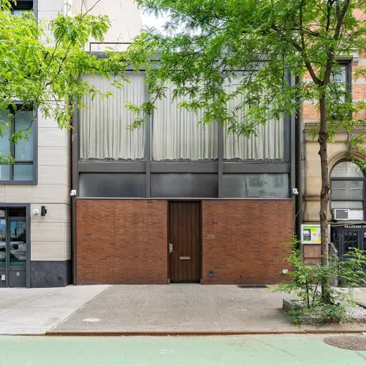
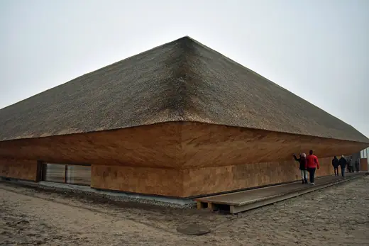

Buildings 325
Sort
 Schindler House1922 · West Hollywood
Schindler House1922 · West Hollywood Säynätsalo Town Hall1952 · Jyväskylä
Säynätsalo Town Hall1952 · Jyväskylä Sainte-Marie de La Tourette1960 · Éveux
Sainte-Marie de La Tourette1960 · Éveux Sluishuis2022 · Amsterdam
Sluishuis2022 · Amsterdam Via 57 West2016 · New York
Via 57 West2016 · New York Petit Palais1900 · Paris
Petit Palais1900 · Paris Amorepacific Headquarters2017 · Seoul
Amorepacific Headquarters2017 · Seoul Bharat Bhavan1982 · Bhopal
Bharat Bhavan1982 · Bhopal General Archive of the Nation1994 · Bogota
General Archive of the Nation1994 · Bogota St Catherine's College, Oxford1962 · Oxford
St Catherine's College, Oxford1962 · Oxford Saitama Prefectural University1999 · Koshigaya
Saitama Prefectural University1999 · Koshigaya Museum of Modern Art2004 · New York
Museum of Modern Art2004 · New York Hollyhock House1921 · Los Angeles
Hollyhock House1921 · Los Angeles Tai Kwun2018 · Hong Kong
Tai Kwun2018 · Hong Kong Graduate House, University of Toronto2000 · Toronto
Graduate House, University of Toronto2000 · Toronto Recoleta Cultural Center1980 · Buenos Aires
Recoleta Cultural Center1980 · Buenos Aires Madinat al-Zahra Museum2009 · Córdoba
Madinat al-Zahra Museum2009 · Córdoba Yale Center for British Art1974 · New Haven
Yale Center for British Art1974 · New Haven Neue Staatsgalerie1984 · Stuttgart
Neue Staatsgalerie1984 · Stuttgart Alvar Aalto Cultural Centre1962 · Wolfsburg
Alvar Aalto Cultural Centre1962 · Wolfsburg Soreq Nuclear Research Center1960 · Yavne
Soreq Nuclear Research Center1960 · Yavne Atelier Bardill2007 · Scharans
Atelier Bardill2007 · Scharans Casa Milà1912 · Barcelona
Casa Milà1912 · Barcelona Aga Khan Museum2014 · Toronto
Aga Khan Museum2014 · Toronto Walden 71975 · Sant Just Desvern
Walden 71975 · Sant Just Desvern Rolex Learning Center2010 · Lausanne
Rolex Learning Center2010 · Lausanne
Rockefeller Guest House1950 · New York Jawahar Kala Kendra1991 · Jaipur
Jawahar Kala Kendra1991 · Jaipur Muuratsalo Experimental House1953 · Jyväskylä
Muuratsalo Experimental House1953 · Jyväskylä Lemke House1933 · Berlin
Lemke House1933 · Berlin 8 House2010 · Copenhagen
8 House2010 · Copenhagen King Abdullah Petroleum Studies and Research Center2017 · Riyadh
King Abdullah Petroleum Studies and Research Center2017 · Riyadh Badshahi Mosque1673 · Lahore
Badshahi Mosque1673 · Lahore Tokyo Metropolitan Art Museum1975 · Tokyo
Tokyo Metropolitan Art Museum1975 · Tokyo Alhambra14th c. · Granada
Alhambra14th c. · Granada Villa Mairea1939 · Noormarkku
Villa Mairea1939 · Noormarkku Suzhou Museum2006 · Suzhou
Suzhou Museum2006 · Suzhou The Interlace2013 · Singapore
The Interlace2013 · Singapore Forbidden City1420 · Beijing
Forbidden City1420 · Beijing Museum Folkwang2010 · Essen
Museum Folkwang2010 · Essen Studio Aalto1955 · Helsinki
Studio Aalto1955 · Helsinki Barnes Foundation2012 · Philadelphia
Barnes Foundation2012 · Philadelphia Golestan Palace1865 · Tehran
Golestan Palace1865 · Tehran Fundació Joan Miró1975 · Barcelona
Fundació Joan Miró1975 · Barcelona Florey Building1971 · Oxford
Florey Building1971 · Oxford
Wadden Sea Centre2017 · Vester Vedsted